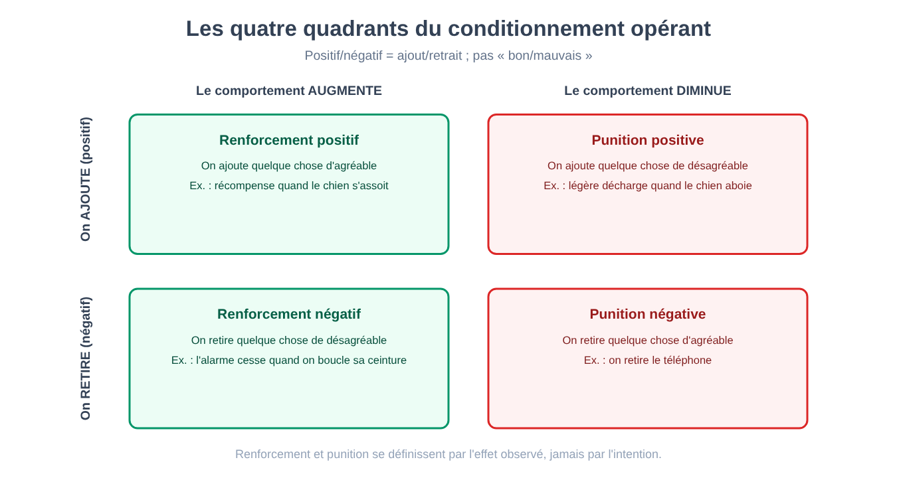
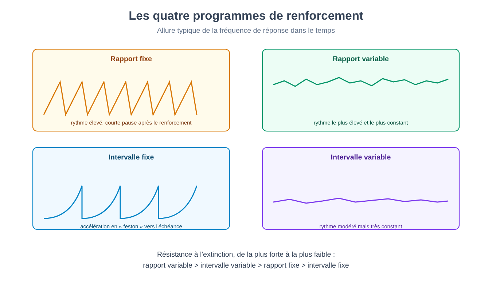

Partie III. L'esprit comme comportement : le programme behavioriste
Chapitre 14 — Le refus de l'intériorité
[EN DEUX MOTS]
Les premières décennies de psychologie expérimentale (chapitre 7) et la tradition psychanalytique (Partie II) partageaient, malgré toutes leurs autres différences, un présupposé : l'esprit possède un contenu interne qui mérite d'être décrit, qu'il s'agisse d'éléments conscients décomposés par un observateur entraîné ou de conflits inconscients reconstruits par un analyste. Ce chapitre expose le geste méthodologique opposé : si un contenu mental n'est pas observable de la même façon par plus d'une personne, il n'est pas une donnée scientifique — seul reste le comportement, mesurable.
Imagine que tu doives juger si un chien « a faim » sans pouvoir le lui demander et sans pouvoir regarder à l'intérieur de sa tête. Tu peux observer combien il mange, avec quelle rapidité, combien de salive il produit à la vue de la nourriture. Tout ce que tu peux mesurer est du comportement et les conditions qui l'entourent — des stimuli, d'abord ; des réponses, ensuite. La faim comme état interne reste une inférence, non une donnée.
Le béhaviorisme (behaviorism) prend cette observation, valable pour le chien, et l'applique sans exception à l'être humain : toute affirmation sur l'esprit qui ne se traduit pas en un comportement observable et mesurable, reproductible par des observateurs différents avec le même résultat, n'appartient pas au domaine de la psychologie scientifique. Non pas que la vie intérieure n'existe pas — sur ce point les fondateurs du programme ne se prononcent pas à l'unanimité — mais parce que bâtir une science sur des données auxquelles un seul observateur à la fois peut accéder (l'introspection, privée par définition) produit, selon cette critique, exactement le type de désaccord entre écoles déjà rencontré au chapitre 7 : des laboratoires différents, des comptes rendus différents, aucun moyen indépendant d'établir qui avait raison.
Ce que l'on gagne
[LE PLAN DE L'EXPÉRIENCE]
Le cas qui rendit le programme populaire. Un bébé de onze mois, exposé de façon répétée à l'association entre un petit animal blanc (au départ neutre, non craint) et un fort bruit soudain survenant juste après le contact avec l'animal, développa après quelques associations une réaction de peur à la seule vue de l'animal, généralisée ensuite à d'autres objets blancs et poilus.
Pourquoi c'est une expérience béhavioriste paradigmatique. On ne formule aucune hypothèse sur un contenu interne de l'enfant (un désir, un conflit). On manipule un stimulus observable (l'association animal-bruit) et l'on mesure une réponse observable (pleurs, évitement, tentative de s'éloigner). L'explication tout entière de la peur apprise repose sur cette unique chaîne stimulus-réponse.
La limite, avec le recul. Un seul enfant, aucun groupe de contrôle, aucune mesure standardisée de l'intensité de la réaction, et une supervision éthique qu'aucun comité n'approuverait aujourd'hui : l'expérience a délibérément exposé un mineur à une peur induite sans plan déclaré pour la supprimer. Elle demeure, pour ces raisons, un cas d'école sur la force démonstrative d'une anecdote bien racontée plus qu'une expérience au sens plein du chapitre 2 — un point sur lequel l'historiographie de la discipline est revenue à plusieurs reprises, y compris à travers des enquêtes récentes sur l'identité réelle de l'enfant concerné.
Le béhaviorisme offre un avantage concret et vérifiable : il rend falsifiable, au sens plein discuté au chapitre 2 et au chapitre 8, ce qui ne l'était pas auparavant. Une prévision sur le comportement — « si j'associe ce stimulus neutre à cette conséquence, la fréquence de cette réponse changera dans cette direction » — peut être contrôlée, répétée, réfutée. C'est le même type de rigueur que l'hypothèse de l'inconscient, telle qu'elle fut formulée dans sa version classique (chapitre 8), ne parvenait pas à atteindre.
Ce que l'on perd
[QUESTION CONTROVERSÉE]
Refuser l'introspection comme donnée scientifique n'équivaut pas à nier l'existence d'une expérience subjective. Mais la distinction entre les deux positions — « l'expérience interne n'est pas une donnée scientifiquement exploitable » contre « l'expérience interne n'existe pas » — a été historiquement estompée, tant par des partisans enthousiastes que par des critiques du programme. La version la plus forte (le comportement est tout ce que l'esprit est, et pas seulement tout ce que l'on peut en mesurer) reste une position philosophique distincte du choix méthodologique, et c'est ce dernier, non la première, qui a produit les résultats expérimentaux durables que les prochains chapitres décriront.
Le prix à payer est le renoncement à toute question sur ce qui se passe « à l'intérieur » entre le stimulus et la réponse — pensée, imagination, raisonnement interne — traité, dans la version la plus radicale du programme, comme une boîte noire sans importance ou inexistante. Ce choix produira, des générations plus tard, sa propre crise interne : le chapitre 19 de cette partie décrira les premières expériences que le béhaviorisme lui-même ne parvint pas à expliquer sans réadmettre quelque chose qui ressemble, quoique sous une forme différente, à une représentation interne.
[MINI-CHRONOLOGIE]
Le manifeste fondateur du programme béhavioriste fut publié durant les vingt premières années du XXe siècle, proposant le comportement observable comme seul objet légitime de la psychologie. Le cas de l'enfant et de l'animal blanc, discuté plus haut, date de quelques années plus tard. Le conditionnement opérant (chapitre 16) et ses programmes de renforcement (chapitre 17) furent développés de façon systématique à partir des années 1930, la systématisation des programmes de renforcement datant de 1957. Les premières fissures expérimentales internes au programme (chapitre 19) apparurent dès les années 1930, des décennies avant que le programme perde sa position dominante.
[L'ESSENTIEL DU CHAPITRE]
• Le béhaviorisme refuse l'introspection comme donnée scientifique : seuls comptent le stimulus observable et la réponse observable.
• L'avantage est la falsifiabilité pleine : des prévisions comportementales vérifiables, en contraste avec le problème de falsifiabilité de l'inconscient classique (chapitre 8).
• Le coût est le renoncement à toute question sur ce qui intervient entre stimulus et réponse — un choix qui sera mis en crise de l'intérieur (chapitre 19).
• Le cas historique le plus connu (peur conditionnée chez un enfant) est aujourd'hui un cas d'école sur les limites méthodologiques, et non un modèle de rigueur expérimentale.
Chapitre 15 — Conditionnement classique
[EN DEUX MOTS]
Ce chapitre expose le plan expérimental qui fonda l'ensemble du programme : comment une réponse automatique et involontaire (la salivation) peut être transférée, par association répétée, d'un stimulus qui la provoque naturellement à un stimulus qui n'avait auparavant aucun effet. Le chapitre expose aussi le vocabulaire technique complet du phénomène et sa réinterprétation contemporaine en termes d'erreur de prédiction.
Le plan original
[LE PLAN DE L'EXPÉRIENCE]
Le phénomène de départ. Un chien salive automatiquement à la vue ou à l'odeur de la nourriture — une réponse réflexe, non apprise, que nous appellerons réponse inconditionnelle (unconditioned response, RI), provoquée par un stimulus inconditionnel (unconditioned stimulus, SI), ici la nourriture elle-même.
La manipulation. Avant chaque repas, on présentait de façon répétée un stimulus en soi neutre à l'égard de la salivation — un son, par exemple — immédiatement avant la présentation de la nourriture. Après un nombre suffisant d'associations, le son seul, sans aucune nourriture, provoquait la salivation.
Le résultat. Le son, d'abord neutre, était devenu un stimulus conditionnel (conditioned stimulus, SC), capable d'évoquer une réponse conditionnelle (conditioned response, RC) — la salivation au seul son — structurellement semblable à la réponse inconditionnelle d'origine, même si souvent d'intensité moindre.
Pourquoi le plan est solide. La séquence temporelle (le son avant la nourriture, non après) est manipulée systématiquement, la réponse est mesurée avec un instrument objectif (la quantité de salive recueillie), et l'effet disparaît de façon prévisible si l'association cesse — la propriété décrite plus bas sous le nom d'extinction.
Le vocabulaire complet du phénomène
L'acquisition (acquisition) est la phase où se forme l'association entre SC et SI, typiquement plus rapide lors des premières associations et plus lente à mesure que la réponse conditionnelle approche de sa force maximale.
L'extinction (extinction) est la disparition progressive de la réponse conditionnelle lorsque le stimulus conditionnel est présenté de façon répétée sans plus être suivi du stimulus inconditionnel — le son sans plus de nourriture finit, à la longue, par ne plus produire de salivation.
La récupération spontanée (spontaneous recovery) est un phénomène qui a surpris des générations d'étudiants de cette matière : après une période de pause suivant l'extinction, la réponse conditionnelle peut réapparaître, même atténuée, à la nouvelle présentation du stimulus conditionnel — signe que l'extinction n'efface pas l'association d'origine, mais ajoute une inhibition qui se superpose à elle et que le temps écoulé affaiblit.
La généralisation (stimulus generalization) est la tendance à répondre aussi à des stimuli semblables, mais non identiques, au stimulus conditionnel d'origine — plus le nouveau stimulus ressemble à l'original, plus la réponse est forte, selon un gradient mesurable.
La discrimination (discrimination) est le processus opposé et complémentaire : si un stimulus semblable est présenté systématiquement sans le renforcement qui accompagne l'original, l'organisme apprend à ne répondre sélectivement qu'à ce dernier, ce qui resserre le gradient de généralisation.
[IDÉE REÇUE]
Le conditionnement classique est souvent décrit, dans le langage courant, comme si le stimulus conditionnel « devenait » le stimulus inconditionnel. Il n'en est rien : le chien ne traite pas le son comme s'il s'agissait de nourriture comestible. Ce qui se transfère, c'est la capacité du stimulus à évoquer une réponse d'anticipation associée, et non l'identité du stimulus lui-même. La distinction est importante au chapitre 49 (circuit de la peur), où le même principe sera appliqué à des stimuli associés à un danger, et non à un plaisir.
La réinterprétation moderne : l'erreur de prédiction
Le conditionnement classique fut, durant une large part du XXe siècle, décrit comme un simple effet de la contiguïté temporelle : il suffit que deux événements se présentent proches dans le temps pour que l'association se forme. Une expérience qui manipulait non la contiguïté mais l'information transmise par un stimulus montra que cette description était incomplète.
[ATTENTION AU SAUT LOGIQUE]
Si l'on enseigne d'abord à un animal qu'un stimulus A prédit pleinement une conséquence, et que ce n'est qu'ensuite que l'on présente le couple « A plus B » suivi de la même conséquence, l'animal n'apprend aucune association significative entre B et la conséquence — bien que B ait été associé à la conséquence exactement le même nombre de fois que dans l'association simple étudiée plus haut. Ce phénomène, connu sous le nom de blocage (blocking), est incompatible avec une explication fondée sur la seule contiguïté : B a toujours été présenté avec la conséquence, et pourtant il ne produit aucun apprentissage, parce que A la prédisait déjà entièrement. Ce qui compte n'est pas la proximité temporelle en soi, mais dans quelle mesure la conséquence était déjà prévue.
Pour rendre compte de ce phénomène et d'autres semblables, on proposa un modèle mathématique dans lequel l'apprentissage ne dépend pas de la simple co-occurrence de stimuli, mais de la différence entre ce qui s'est effectivement produit et ce qui était déjà prévu — une erreur de prédiction (prediction error).
[FORMULE]
Le modèle de l'erreur de prédiction dans le conditionnement (Rescorla-Wagner).
ΔV = α · β · (λ − V)
Où :
• ΔV est le changement, en un seul essai, de la force de l'association entre le stimulus conditionnel et la conséquence ;
• α (alpha) est la saillance du stimulus conditionnel — son caractère plus ou moins remarquable, une valeur comprise entre 0 et 1 ;
• β (bêta) est un paramètre lié à la force de la conséquence (du stimulus inconditionnel), lui aussi compris entre 0 et 1 ;
• λ (lambda) est la force maximale d'association que cette conséquence peut soutenir ;
• V est la force associative déjà possédée par le stimulus (et par d'éventuels autres stimuli présents avec lui) avant cet essai.
Le terme (λ − V) est l'erreur de prédiction : la distance entre ce que l'on attendait (V) et ce que la situation permettrait au maximum d'attendre (λ). Quand V se rapproche de λ, l'erreur diminue et l'apprentissage ralentit jusqu'à s'arrêter — c'est exactement la raison pour laquelle, dans l'expérience du blocage décrite plus haut, le stimulus B n'apprend rien : l'erreur de prédiction est déjà proche de zéro avant même que B apparaisse, parce que A prédisait déjà tout.
Exemple de calcul. Posons α = 0,5 (un stimulus modérément saillant), β = 0,6 (une conséquence de force intermédiaire), λ = 100 (la force maximale possible d'association pour cette conséquence) et V = 40 (l'association déjà acquise lors des essais précédents). Alors : ΔV = 0,5 × 0,6 × (100 − 40) = 0,3 × 60 = 18. La force associative augmente de 18 points lors de cet essai, portant V à 58 pour l'essai suivant — un incrément qui deviendra peu à peu plus petit à mesure que V s'approche de 100, dessinant la courbe d'acquisition typique qui ralentit, sans jamais s'arrêter brusquement.
[TIENT-ON ENCORE ?]
Ce modèle, proposé pour le conditionnement classique bien avant que n'existent les techniques permettant d'observer l'activité de neurones individuels chez un animal éveillé, a trouvé un pendant surprenant, dans une extension qui tient compte du temps, des décennies plus tard dans un domaine complètement différent : des enregistrements de l'activité de neurones dopaminergiques chez des singes pendant des tâches de récompense ont montré que ces neurones ne répondent pas simplement à la récompense en elle-même, mais signalent précisément la différence entre la récompense reçue et la récompense attendue — augmentant leur activité quand la récompense est inattendue ou supérieure à ce qui était prévu, restant silencieux quand elle est pleinement prévue, et réduisant leur activité sous le niveau de base quand une récompense attendue n'arrive pas. C'est l'une des convergences les plus solides entre un modèle mathématique du comportement élaboré sans aucune référence au cerveau et un mécanisme biologique observé indépendamment — un thème auquel le chapitre 52 reviendra à propos de la motivation et de la récompense.
[L'ESSENTIEL DU CHAPITRE]
• Le conditionnement classique transforme un stimulus neutre en un stimulus capable d'évoquer une réponse, par association répétée avec un stimulus qui la provoque naturellement.
• Acquisition, extinction, récupération spontanée, généralisation et discrimination sont les cinq phénomènes fondamentaux du paradigme.
• Le phénomène du blocage montre que la contiguïté temporelle seule ne suffit pas à expliquer l'apprentissage : c'est l'erreur de prédiction qui compte.
• Le modèle de l'erreur de prédiction a trouvé un pendant biologique dans l'activité des neurones dopaminergiques liés à la récompense (chapitre 52).
• Appliqué à des stimuli menaçants, le même mécanisme de base sous-tend le circuit de la peur apprise (chapitre 49).
Chapitre 16 — Conditionnement opérant
[EN DEUX MOTS]
Le conditionnement classique explique comment un stimulus en vient à évoquer une réponse automatique. Il n'explique pas, en revanche, comment un comportement volontaire — appuyer sur un levier, lever la main, éviter une rue — devient plus ou moins fréquent en fonction de ses conséquences. C'est le thème de ce chapitre : le conditionnement opérant (operant conditioning), dans lequel c'est le comportement lui-même, et non un stimulus qui le précède, qui est modifié par ses conséquences.
Le plan expérimental
[LE PLAN DE L'EXPÉRIENCE]
L'appareil. Un animal (typiquement un rat ou un pigeon) est placé dans une chambre expérimentale contenant un levier ou un disque que l'animal peut actionner, reliés à un dispositif qui délivre automatiquement une conséquence (de la nourriture, par exemple) selon des règles établies par l'expérimentateur.
La logique de base. L'animal explore d'abord l'environnement sans but déclaré. Lorsque, par hasard, il actionne le levier et reçoit de la nourriture, la probabilité qu'il répète cette action augmente. Aucune instruction n'est donnée : le comportement se modifie exclusivement en fonction de ce qui le suit.
L'avantage de la méthode. L'appareil permet d'enregistrer automatiquement et en continu la fréquence de la réponse dans le temps, sans l'intervention d'un observateur humain qui pourrait introduire de la subjectivité dans la mesure — un problème de fiabilité semblable à ceux discutés aux chapitres 3 et 7, résolu ici par l'enregistrement mécanique plutôt que par l'entraînement de l'observateur.
Le vocabulaire : renforcement et punition, positif et négatif
Le terme technique le plus mal compris de cette tradition est probablement le couple positif/négatif, qui dans le langage courant est associé à « bon » et « mauvais ». Dans le vocabulaire technique du conditionnement opérant, positif et négatif indiquent simplement l'ajout ou le retrait de quelque chose, indépendamment du caractère agréable ou désagréable de ce quelque chose.
[IDÉE REÇUE]
« Renforcement négatif » ne signifie pas punition, même si le nom suggère le contraire à qui l'entend pour la première fois. Le renforcement, par définition, augmente la fréquence d'un comportement ; la punition la diminue. « Négatif » et « positif » précisent seulement si, pour obtenir cet effet, quelque chose est retiré (négatif) ou ajouté (positif). Un renforcement négatif augmente un comportement en retirant quelque chose de désagréable — boucler sa ceinture pour faire cesser une alarme sonore est un renforcement négatif du comportement de boucler la ceinture, et non une punition.
Cela produit quatre combinaisons, souvent appelées les quatre quadrants du conditionnement opérant :
| Quadrant | Ce qui se passe | Effet sur le comportement | Exemple |
|---|---|---|---|
| Renforcement positif | On ajoute quelque chose d'agréable | Le comportement augmente | Le chien reçoit une récompense quand il s'assied |
| Renforcement négatif | On retire quelque chose de désagréable | Le comportement augmente | L'alarme s'arrête quand on boucle sa ceinture |
| Punition positive | On ajoute quelque chose de désagréable | Le comportement diminue | Une légère secousse quand le chien aboie |
| Punition négative | On retire quelque chose d'agréable | Le comportement diminue | On retire le téléphone après un comportement indésirable |

[ATTENTION AU SAUT LOGIQUE]
Une erreur courante consiste à déduire l'efficacité d'une conséquence de sa nature objective plutôt que de son effet mesuré sur le comportement. Si une conséquence conçue comme une punition fait augmenter, au lieu de diminuer, la fréquence du comportement qu'elle devrait décourager — cela arrive, par exemple, lorsque l'attention reçue pendant le reproche est plus appréciée que l'indifférence habituelle — alors, par définition opérationnelle, cette conséquence ne fonctionne pas comme une punition, quelle qu'ait été l'intention de celui qui l'administre. La définition du renforcement et de la punition, dans cette tradition, est toujours fonctionnelle (fondée sur l'effet observé), jamais fondée sur l'intention ou sur la nature apparente du stimulus.
Pourquoi la punition est un outil limité
La recherche sur ce paradigme converge sur un point souvent négligé dans l'usage pratique de la punition : elle supprime un comportement dans le contexte où elle est appliquée, mais n'enseigne pas quel comportement alternatif mettre à sa place, elle tend à se généraliser de façon imprévisible (évitement du contexte ou de la personne qui punit, et pas seulement du comportement puni), et, si elle est introduite de façon graduelle, elle tend à produire une accoutumance et à exiger une intensité croissante. Le renforcement d'un comportement alternatif souhaitable, discuté en détail au chapitre 18, est pour ces raisons considéré par la recherche expérimentale comme un outil plus efficace et plus stable dans le temps.
[L'ESSENTIEL DU CHAPITRE]
• Le conditionnement opérant modifie un comportement volontaire en fonction de ses conséquences, et non un stimulus automatique comme dans le conditionnement classique (chapitre 15).
• Positif/négatif indiquent l'ajout/le retrait d'un stimulus, et non « bon/mauvais » : la distinction donne naissance à quatre quadrants (renforcement positif, renforcement négatif, punition positive, punition négative).
• Renforcement et punition sont définis de façon fonctionnelle, par l'effet observé sur la fréquence du comportement, et non par l'intention de celui qui les administre.
• La punition supprime sans enseigner d'alternative, se généralise de façon imprévisible et perd en efficacité avec le temps — des limites que le chapitre 18 abordera en proposant des outils constructifs alternatifs.
Chapitre 17 — Programmes de renforcement
[EN DEUX MOTS]
Tous les renforcements ne suivent pas chaque occurrence d'un comportement. Ce chapitre expose comment changent la fréquence et, surtout, la résistance à l'extinction d'un comportement selon le moment et la régularité avec lesquels arrive le renforcement — un principe aux conséquences directes sur les jeux d'argent et sur la conception d'applications numériques pensées pour maximiser l'engagement.
Ratio et intervalle, fixe et variable
Un programme de renforcement (schedule of reinforcement) spécifie la règle selon laquelle le renforcement suit le comportement, en croisant deux dimensions indépendantes : ce qui compte (le nombre de réponses, ou le temps écoulé) et si ce décompte est constant ou imprévisible.
Le ratio fixe (fixed ratio) délivre le renforcement après un nombre constant de réponses (par exemple, tous les dix appuis sur le levier) ; il produit un rythme de réponse élevé avec une brève pause juste après chaque renforcement.
Le ratio variable (variable ratio) délivre le renforcement après un nombre de réponses qui varie de façon imprévisible autour d'une moyenne (parfois après 3, parfois après 15, en moyenne après 10) ; il produit le rythme de réponse le plus élevé et le plus constant de tous les programmes, sans les pauses typiques du ratio fixe.
L'intervalle fixe (fixed interval) délivre le renforcement pour la première réponse émise après un temps constant depuis le dernier renforcement ; il produit une augmentation caractéristique de la fréquence de réponse à mesure que l'intervalle approche de son échéance, avec presque aucune réponse juste après le renforcement précédent.
L'intervalle variable (variable interval) délivre le renforcement pour la première réponse émise après un temps qui varie de façon imprévisible autour d'une moyenne ; il produit un rythme de réponse modéré mais très constant dans le temps, sans les oscillations de l'intervalle fixe.

Pourquoi les programmes variables résistent davantage à l'extinction
[CHIFFRES]
Si l'on compare la persistance du comportement après l'interruption de tout renforcement (l'extinction, déjà rencontrée au chapitre 15 pour le conditionnement classique), les programmes intermittents produisent plus de réponses avant que le comportement ne cesse que le renforcement continu, et les programmes variables plus que les programmes fixes : ces deux résultats comptent parmi les plus constants et les plus répliqués de la tradition de recherche sur le conditionnement opérant. L'ordonnancement complet entre les quatre programmes est moins net : à fréquence de renforcement égale, les études les plus soigneuses (Nevin et collègues, 2001) ont trouvé une résistance à l'extinction égale ou supérieure dans l'intervalle variable par rapport au ratio variable, qui reste cependant le programme au rythme de réponse le plus élevé.
[ATTENTION AU SAUT LOGIQUE]
L'imprévisibilité du renforcement, plus que sa fréquence globale, est une variable importante pour la résistance à l'extinction. Un programme à ratio variable peut délivrer, en moyenne, un renforcement toutes les dix réponses — exactement comme un ratio fixe à dix — et pourtant produire une persistance bien plus grande lorsque le renforcement cesse complètement. La raison avancée est que, dans un programme variable, l'organisme n'a aucun moyen de distinguer « cette fois le renforcement n'est pas arrivé » de « le renforcement, simplement, exige encore quelques réponses de plus » — l'absence de renforcement, après tout, fait partie de l'expérience normale même quand le programme continue de fonctionner régulièrement.
Le jeu d'argent sur machines à sous est l'application la plus souvent citée de ce principe : le rapport entre mises et gains est variable et imprévisible, et c'est précisément cette imprévisibilité, plus que le montant moyen des gains, qui est avancée comme facteur clé dans la persistance du comportement de jeu même en l'absence d'un gain net positif dans le temps. Le même principe a été appliqué, plus récemment, à la conception de notifications et de contenus d'applications numériques : on a proposé qu'un flux de contenus (messages, mises à jour, récompenses virtuelles) délivré à une cadence imprévisible tende à soutenir un comportement de consultation répétée de l'application de façon plus résistante à l'abandon qu'une cadence fixe et prévisible ; l'évidence directe sur les notifications et les applications est cependant beaucoup plus rare que celle du laboratoire.
[QUESTION CONTROVERSÉE]
Il existe une convergence conceptuelle qui mérite d'être signalée explicitement, tout en restant deux explications distinctes et non interchangeables : la persistance d'un comportement qui a cessé de produire un bénéfice évident n'est pas étrangère à ce qui a été rencontré, avec des outils théoriques tout à fait différents, à propos de la compulsion de répétition psychanalytique (chapitre 11) — où la répétition d'un schéma relationnel désavantageux était expliquée par une pulsion, et non par un programme de renforcement intermittent. Les deux traditions, partant de présupposés incompatibles sur le fonctionnement de l'esprit, aboutissent à décrire la même énigme comportementale : pourquoi un schéma qui ne produit plus de gain visible peut s'avérer, dans certaines conditions, le plus difficile de tous à éteindre.
[L'ESSENTIEL DU CHAPITRE]
• Les quatre programmes de renforcement de base croisent ce qui compte (réponses ou temps) avec le degré de prévisibilité du décompte (fixe ou variable).
• Le ratio variable produit le rythme de réponse le plus élevé ; les programmes intermittents résistent à l'extinction plus que le renforcement continu, et les programmes variables plus que les programmes fixes.
• L'imprévisibilité, plus que la fréquence moyenne du renforcement, est un facteur important de la résistance : l'organisme ne peut pas distinguer une absence temporaire normale d'une extinction réelle.
• Le jeu d'argent et la conception d'applications numériques sont les applications les plus directes de ce principe.
• La persistance de comportements qui ne sont plus avantageux trouve un parallèle conceptuel, et non une équivalence, dans la compulsion de répétition psychanalytique (chapitre 11).
Chapitre 18 — Construire des comportements
[EN DEUX MOTS]
Les chapitres précédents ont décrit comment un comportement déjà existant change de fréquence en fonction de ses conséquences. Ce chapitre aborde un problème différent et pratiquement plus important : comment construire, à partir de rien, un comportement que l'organisme n'a encore jamais émis — la partie appliquée de cette tradition qui a produit les résultats les plus durables, y compris en dehors du laboratoire.
Le façonnement
Le façonnement (shaping) consiste à renforcer des approximations successives de plus en plus proches du comportement final souhaité, au lieu d'attendre que le comportement complet se présente spontanément — événement qui, pour un comportement complexe, pourrait ne jamais se produire par pur hasard.
[LE PLAN DE L'EXPÉRIENCE]
Le problème. Enseigner à un animal un comportement qu'il n'émet jamais spontanément (par exemple, pousser une balle vers une cible avec le museau) ne peut pas partir du renforcement du comportement final, parce que ce comportement, en l'absence d'apprentissage préalable, ne se présente jamais de lui-même.
La solution. On renforce d'abord n'importe quel mouvement dans la direction approximativement correcte (par exemple, une simple orientation vers la balle) ; une fois que ce comportement se stabilise, le critère de renforcement se déplace graduellement vers des approximations de plus en plus précises (toucher la balle, puis la pousser, puis la pousser en direction de la cible), jusqu'à atteindre le comportement final.
Pourquoi cela fonctionne. Chaque phase intermédiaire est atteignable à partir de la précédente avec une marge réduite de variabilité aléatoire, de sorte que le comportement cible de chaque phase a une probabilité raisonnable de se présenter spontanément au moins une fois, ce qui permet au renforcement d'agir sur lui.
Le chaînage et l'estompage de l'aide
Le chaînage (chaining) construit une séquence complexe de comportements en reliant des étapes individuelles apprises séparément, dans laquelle l'achèvement de chaque étape devient le stimulus qui signale le début de la suivante — lacer ses chaussures, par exemple, est typiquement enseigné comme une chaîne d'étapes plus petites, chacune d'abord renforcée de façon indépendante.
L'estompage de l'aide (prompting et fading) consiste à fournir au départ un soutien explicite (une instruction verbale, un guidage physique, un exemple à imiter) pour obtenir le comportement souhaité, puis à réduire graduellement ce soutien à mesure que le comportement se stabilise de façon autonome — l'objectif est que le comportement final dépende du stimulus naturel de la situation, et non plus du soutien artificiel utilisé pour l'instaurer.
[IDÉE REÇUE]
Une aide initiale trop généreuse, maintenue trop longtemps, n'accélère pas l'apprentissage autonome du comportement : elle risque de produire une dépendance au soutien lui-même, qui devient alors une partie du stimulus nécessaire pour obtenir le comportement. L'estompage de l'aide exige une planification explicite de quand et comment la réduire, et pas seulement de la manière de la fournir au début.
Le renforcement différentiel d'un comportement alternatif
Le façonnement construit un comportement nouveau ; le renforcement différentiel d'un comportement alternatif (differential reinforcement of alternative behavior) sert en revanche à en réduire un indésirable sans recourir à la punition. La procédure comporte deux parties : on renforce de façon systématique un comportement souhaitable qui ne peut pas être émis en même temps que celui qu'il faut réduire, et l'on cesse de renforcer le comportement indésirable. Un enfant qui interrompt la leçon en criant pour obtenir de l'attention, par exemple, reçoit de l'attention chaque fois qu'il lève la main et attend son tour, et aucune quand il crie. Le comportement indésirable n'est pas puni : il perd sa fonction, c'est-à-dire qu'il cesse de produire la conséquence qui le maintenait (dans le langage du chapitre 15, il subit l'extinction), tandis que l'alternative la produit avec régularité.
C'est la raison pour laquelle le chapitre 16 l'indiquait comme un outil plus stable que la punition : la punition supprime un comportement sans dire ce qu'il faut faire à sa place, tandis que le renforcement différentiel offre une alternative qui obtient le même résultat. La limite est pratique : il ne fonctionne que si l'on connaît la fonction du comportement indésirable, c'est-à-dire quelle conséquence le maintient, et c'est pourquoi la section suivante consacre de la place à l'analyse fonctionnelle.
Le contrôle antécédent et l'analyse fonctionnelle
Jusqu'ici le chapitre s'est concentré sur ce qui suit un comportement. Mais un comportement est aussi influencé par ce qui le précède : le contrôle antécédent (antecedent control) modifie la probabilité d'un comportement en agissant sur la situation qui le précède, et non sur ses conséquences — en rendant plus ou moins présent, plus ou moins saillant un stimulus qui signale l'occasion de se comporter d'une certaine manière.
L'analyse fonctionnelle (functional analysis) est la démarche systématique par laquelle on identifie les antécédents et les conséquences qui maintiennent effectivement un comportement problématique dans la pratique réelle, au lieu de les présumer à l'avance — un comportement en apparence identique (par exemple, des pleurs répétés) peut être maintenu, chez des personnes différentes, par des conséquences complètement différentes (attention reçue, évitement d'une tâche déplaisante, simple stimulation sensorielle), et l'intervention efficace dépend du fait d'avoir correctement identifié quelle conséquence, dans ce cas précis, maintient effectivement le comportement.
[TIENT-ON ENCORE ?]
Ces principes appliqués — façonnement, chaînage, estompage de l'aide, contrôle antécédent, analyse fonctionnelle — restent aujourd'hui parmi les contributions les plus durablement utilisées de l'ensemble de la tradition béhavioriste, appliqués dans des domaines allant de l'enseignement de nouvelles habiletés dans le développement atypique à la réhabilitation, du dressage animal à la conception d'interfaces et de programmes de formation. À la différence d'autres composantes de cette tradition (par exemple l'ambition de réduire toute la psychologie au seul comportement observable, discutée au chapitre 14), cette partie appliquée ne dépend pas de l'acceptation du cadre théorique plus large dont elle est issue : elle fonctionne, et a été vérifiée empiriquement, indépendamment du degré d'adhésion au reste du programme.
[L'ESSENTIEL DU CHAPITRE]
• Le façonnement construit un comportement nouveau en renforçant des approximations successives de plus en plus proches de la cible finale.
• Le chaînage relie des étapes déjà apprises en une séquence, dans laquelle chaque étape signale le début de la suivante.
• L'estompage de l'aide réduit graduellement un soutien initial, pour éviter que le comportement final ne dépende du soutien plutôt que du stimulus naturel.
• Le contrôle antécédent agit sur ce qui précède le comportement, et pas seulement sur ce qui le suit.
• L'analyse fonctionnelle identifie quelle conséquence spécifique maintient réellement un comportement problématique, avant d'intervenir.
• Cette partie appliquée reste parmi les contributions les plus durablement utilisées de la tradition, indépendamment de l'acceptation de son cadre théorique plus large.
Chapitre 19 — Les limites de l'intérieur
[EN DEUX MOTS]
Ce chapitre de clôture de la Partie III expose comment le programme béhavioriste a été mis en crise non par des critiques externes, mais par les résultats de ses propres expériences : des phénomènes que le conditionnement, tel qu'il avait été formulé, ne parvenait ni à prévoir ni à expliquer sans réintroduire quelque chose qui ressemble à une représentation interne.
La préparation biologique et la dérive instinctuelle
Le conditionnement classique et opérant furent initialement proposés comme des processus généraux, en principe applicables à toute combinaison de stimulus et de réponse, dans toute espèce, avec la même facilité. La recherche expérimentale a montré que cette généralité ne tient pas.
[LE PLAN DE L'EXPÉRIENCE]
Le phénomène. Certaines associations se forment avec un nombre d'associations bien plus faible que prévu, et même avec une seule association, si elles impliquent des combinaisons biologiquement pertinentes pour l'espèce — par exemple, l'association entre le goût d'un aliment et un malaise gastrique ultérieur, même plusieurs heures après, se forme chez un rat avec une seule exposition, tandis que la même procédure appliquée à d'autres combinaisons de stimuli (par exemple un son associé au même malaise) exige beaucoup plus d'associations ou ne se forme pas du tout.
L'interprétation. Ce résultat, difficile à concilier avec un principe d'apprentissage général et indifférent au contenu spécifique des stimuli impliqués, fut expliqué par l'idée d'une préparation biologique (biological preparedness) : l'évolution aurait rendu certains organismes prédisposés à apprendre plus facilement précisément ces associations pertinentes pour la survie de l'espèce (éviter les aliments avariés), faisant du conditionnement une chose tout sauf uniforme entre des combinaisons de stimuli différentes.
Un phénomène complémentaire, la dérive instinctuelle (instinctive drift), fut observé lors de tentatives de dresser des animaux à des comportements économiquement utiles par conditionnement opérant : après un dressage d'abord réussi, certains animaux commencèrent progressivement à remplacer le comportement appris et renforcé par des comportements instinctifs typiques de l'espèce, même lorsque ces derniers ne produisaient plus aucun renforcement et en interrompaient même la délivrance — comme si, avec le temps, le comportement naturel de l'espèce réémergeait et l'emportait sur le comportement conditionné artificiellement, en contradiction directe avec l'idée que n'importe quelle réponse peut être reliée à n'importe quelle conséquence avec la même facilité.
L'apprentissage latent
[LE PLAN DE L'EXPÉRIENCE]
Le problème. Selon une lecture rigoureuse du conditionnement opérant, l'apprentissage exige un renforcement pour se former : sans conséquence liée au comportement, aucune association ne devrait s'établir.
L'expérience. Trois groupes de rats parcouraient pendant dix-sept jours le même labyrinthe complexe (Tolman et Honzik, 1930). Un groupe trouvait de la nourriture à la fin dès le premier jour et s'améliorait graduellement. Un deuxième groupe ne trouvait jamais de nourriture et montrait des performances médiocres et presque inchangées — jusque-là conforme à la théorie. Un troisième groupe explorait pendant dix jours sans récompense ; quand la nourriture apparaissait le onzième jour, son temps de parcours chutait presque aussitôt jusqu'au niveau du premier groupe, ou un peu en dessous.
L'interprétation. L'amélioration soudaine, trop rapide pour être expliquée par un apprentissage qui ne commencerait qu'avec l'introduction de la récompense, indiquait que les rats avaient appris la structure du labyrinthe durant l'exploration libre, sans aucun renforcement — un apprentissage latent (latent learning), resté non manifeste dans le comportement jusqu'à ce qu'une raison de l'utiliser (la récompense) rende avantageux de l'exprimer. La connaissance acquise fut décrite comme une carte cognitive (cognitive map) interne de la disposition spatiale du labyrinthe — un terme qui présuppose explicitement une représentation interne, exactement ce que le programme béhavioriste le plus rigoureux s'était proposé d'éviter.
[ATTENTION AU SAUT LOGIQUE]
L'apprentissage latent ne réfute pas que le renforcement influence le comportement — il le fait, et de façon massive, comme le montre la chute du temps de parcours dès que la récompense apparaît. Ce que l'expérience réfute, c'est l'idée plus forte selon laquelle, sans renforcement, aucun apprentissage ne se forme. La distinction entre apprentissage (qui peut avoir lieu sans renforcement) et performance (que le renforcement peut influencer séparément, en rendant avantageux de montrer ce que l'on a déjà appris) est la leçon méthodologique la plus durable de cette expérience.
L'apprentissage observationnel
[LE PLAN DE L'EXPÉRIENCE]
La question. Le conditionnement, qu'il soit classique ou opérant, exige que l'organisme lui-même éprouve directement le stimulus ou la conséquence. Un comportement peut-il se former aussi par la seule observation d'un autre individu, sans éprouver personnellement ni le stimulus ni la conséquence ?
Le plan. Des enfants d'âge préscolaire étaient répartis en groupes et exposés à la vue d'un adulte qui adoptait un comportement agressif physique et verbal envers un grand pantin gonflable, dans certaines conditions suivi d'une conséquence positive pour l'adulte (éloge), dans d'autres d'une conséquence négative (réprimande), dans d'autres encore sans aucune conséquence visible. Ensuite, les enfants avaient la possibilité de jouer seuls avec le même pantin, et leur comportement était observé et classé par des évaluateurs (dans des études ultérieures, tenus dans l'ignorance de la condition). Les trois conditions de conséquence proviennent d'un travail de 1965 ; la comparaison avec des enfants qui n'avaient vu aucun modèle, du travail original de 1961.
Le résultat. Les enfants qui avaient observé le comportement agressif imitèrent spontanément des actions spécifiques observées chez l'adulte, dans une mesure nettement supérieure à celle d'enfants qui n'avaient pas observé cette démonstration — un apprentissage survenu entièrement par observation, sans que l'enfant ait lui-même jamais reçu ni renforcement ni punition pour ce comportement. La conséquence reçue par l'adulte observé modulait surtout la probabilité que l'enfant mette en acte spontanément le comportement appris, plus que l'apprentissage du comportement en soi, qui avait lieu de toute façon, même dans la condition sans conséquences visibles.
Pourquoi c'est un problème pour le programme béhavioriste au sens strict. Le comportement de l'enfant change en l'absence de toute expérience directe de stimulus, de réponse et de conséquence propres : la seule explication disponible exige d'admettre que l'observateur représente en interne, mémorise et reproduit ensuite une séquence d'actions jamais exécutée ni renforcée en première personne — exactement le type de processus interne qu'un béhaviorisme rigoureux aurait voulu éviter de postuler.
[TIENT-ON ENCORE ?]
Ces trois phénomènes — préparation biologique, apprentissage latent, apprentissage observationnel — ne réfutent pas la réalité du conditionnement classique et opérant, largement confirmée et toujours employée (chapitre 18). Ils réfutent l'ambition la plus radicale du programme exposée au chapitre 14 : que tout comportement, chez tout organisme, s'explique par la seule histoire de stimuli, de réponses et de conséquences, sans aucun besoin de représentations internes. C'est précisément à partir de ces résultats, avec des développements parallèles dans l'étude du langage et de la résolution de problèmes, qu'une partie de la psychologie expérimentale recommença à s'occuper explicitement de ce qui se passe « à l'intérieur » de la boîte noire — un changement de perspective que le chapitre 41 reprendra en détail comme tournant cognitiviste, et que le chapitre 56 reprendra à propos du développement de l'enfant, où l'apprentissage observationnel joue un rôle central.
[L'ESSENTIEL DU CHAPITRE]
• La préparation biologique montre que toutes les associations ne se forment pas avec la même facilité : certaines combinaisons de stimuli, pertinentes pour la survie de l'espèce, s'apprennent avec une seule association.
• La dérive instinctuelle montre des comportements conditionnés remplacés avec le temps par des comportements instinctifs de l'espèce, même au détriment du renforcement.
• L'apprentissage latent distingue apprentissage (qui peut avoir lieu sans renforcement) et performance (le renforcement la rend avantageuse à montrer), par le concept de carte cognitive.
• L'apprentissage observationnel montre un changement de comportement sans aucune expérience directe de stimulus, de réponse ou de conséquence propres.
• Ces résultats ne réfutent pas le conditionnement, mais sa prétention la plus radicale à se passer de toute représentation interne — ouvrant la voie au tournant cognitiviste (chapitre 41) et à un rôle central de l'apprentissage observationnel dans le développement (chapitre 56).